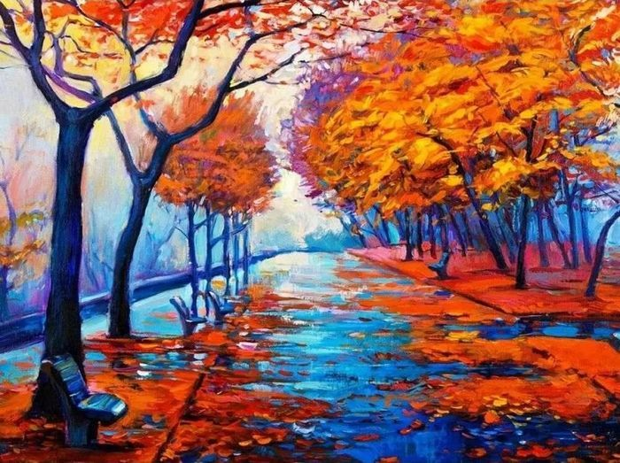
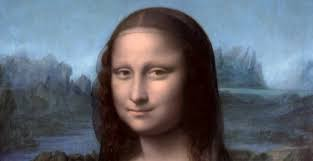
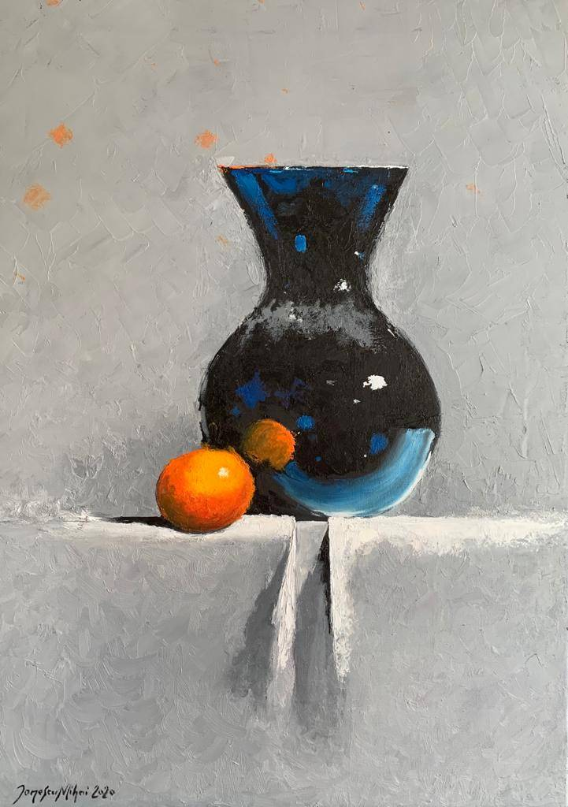
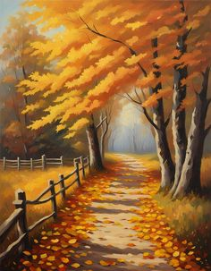

Alfabetizare vizuală
înapoiCunoaște alfabetul vizual
PEISAJ

Peisajul este un gen de pictură sau de grafică având ca obiect reprezentarea cu precădere a
priveliștilor din natură. Peisajul pictural oferă o intenționalitate și un sens estetic.
Peisajul pictural oferă o intenționalitate și un sens estetic. Fenomenele naturale precum
lumina, culoarea, structura geometrică (naturală) sau aleatorie, textura, sunt convertite în
calități plastice și constructive, potrivit unei viziuni artistice.
Se pot evidenția diverse specii de peisaje: citadin (rural, urban - inclusiv cel arhitectural –
veduta), peisaj industrial, maritim (marină), bucolic, panoramic etc.
Peisaj de toamnă
PORTRET
Portretul este reprezentarea unei persoane (pictură, fotografie, sculptură etc) atât conform trăsăturilor sale reale cât și „tonusul” său. Portretul pe care și-l face artistul sieși este denumit autoportret. În realitate, portretul nu este nicicând o simplă reproducere mecanică a trăsăturilor cuiva (asemenea unei măști de ceară modelată pe față sau după o oarecare imprimare fotografică), pentru a fi un portret însă, intră în joc sensibilitatea artistului, care interpretează trăsăturile modelului fie după gusturile sale, fie conform curentului artistic pe care-l urmează fie conform caracteristicilor artei timpului în care realizează opera.
Etapele desenării portretuluiNATURĂ STATICĂ
Natura statică sau natura moartă este reprezentarea în artele vizuale a unor obiecte neînsuflețite, din natură sau ordonate în mod voluntar. Prin definiție, natura moartă este un gen de reprezentare grafică sau picturală a unui grup de obiecte inanimate naturale, ca de exemplu glastră cu flori, fructe sau legume așezate pe o fructieră, vânat, o vază, sticlă, amforă, o narghilea, pahare, farfurii, piese la care sunt asortate uneori și cărți, un ziar împăturit, într-o combinație artificială și un element textil ori două, ca suport cromatic s.a.m.d.
Cum sa faci o natură statică 1Cum sa faci o natură statică 2
Perspectiva liniară, aeriană
1 punct de fugă
2 puncte de fugă
Perspectiva aeriană
Perspectiva atmosferică